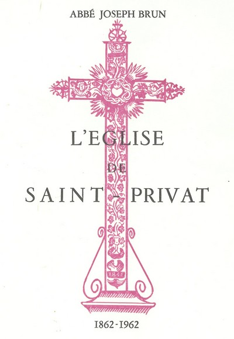

En 1962, à l'occasion des 100 ans de l'église de Saint-Privat, l'abbé Joseph Brun — alors curé de Saint-Privat depuis novembre 1957 — a consacré un petit fascicule à l'histoire des trois églises de Saint-Privat.

En cette année 1962, au cours de laquelle nous allons fêter le centenaire de notre église, notre désir serait d'évoquer les détails de sa construction pour rappeler les soucis qu'elle a causés et par conséquent la faire mieux aimer, si possible, par les paroissiens de St Privat.
Au préalable, il sera nécessaire d'indiquer au moins brièvement ce que furent les deux églises précédentes et quelles furent leurs vicissitudes, pour mieux faire saisir pourquoi et comment on a été amené à construire en 1862 l'église actuelle.
Nous terminerons cet exposé en donnant la liste des curés de St Privat de 1677, nous n'avons pu remonter plus haut, jusqu'à nos jours.
Daigne St Privat, patron de la paroisse, nous aider dans l'élaboration de ce travail, revu par Monsieur l'Abbé Charray que nous remercions bien vivement. Il nous a en effet fourni des suggestions qui nous ont été précieuses.